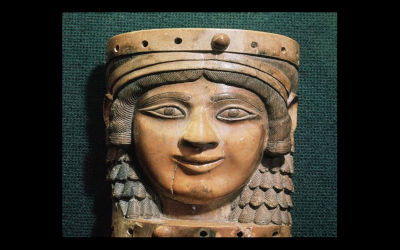

Arte na Antiguidade
Do quarto ao primeiro milênio antes de Cristo, no Egito, a arte deixa de ser pré-histórica.
Com o surgimento da escrita, a sofisticação das técnicas de construção (pirâmides de Miquerinos, Quéfren e Quéops, no terceiro milênio a.C.) e o desenvolvimento da simetria, a arteganha princípios rigorosos de ordenação e acabamento. Por volta de 2.600 a.C., por exemplo, já se domina a técnica da escultura, capaz de modelar a Cabeça de um príncipe que se vê no Museu Egípcio do Cairo.
No curso desses três milênios, a arte egípcia foi se tornando mais realista, chegando à maestria comprovada em Rainha Nefertiti – ver foto ao lado – (1.360 a.C.?), busto da esposa do imperador Aquenatón.
Arte Mesopotâmica
No mesmo período, na Mesopotâmia, na cultura fundada pelos sumérios em 4.000 a.C., desenvolve-se igualmente o senso de proporções e ornamentação que tiraria a linguagem visual do estágio tosco da pré-história.
No entanto, a sofisticação técnica não chega ali ao nível atingido no Egito Antigo. Falta-lhe a capacidade de realizar a simetria axial – a transcrição volumétrica – que os egípcios detinham. Mesmo assim, com seu grau maior de estilização e planificação, a arte mesopotâmica produz obras de grande qualidade estética, sobretudo no que se refere à variedade de motivos introduzidos para ornamentar estátuas e selos.
Império assírio – Ao norte da Mesopotâmia tem início a dominação assíria, cujo período de apogeu ocorre entre 1.000 a.C. e 612 a.C. e atinge grandes resultados artísticos com o desenvolvimento da estruturação da superfície. O baixo-relevo em calcário Assurnasipal na caça ao leão (880 a.C.?-860 a.C.?), que se pode ver no Museu Britânico de Londres, é uma obra dotada de enorme poder de síntese e dinâmica.
Império babilônico – Um último florescimento da arte no Antigo Oriente se dá no império babilônico, de 612 a.C. a 539 a.C. São construídos palácios e templos, que unem a tradição mesopotâmica e a egípcia, onde não há monumentalidade, e o que mais chama a atenção é o rebuscamento decorativo.
Arte Grega
Foram provavelmente os gregos micênicos que deram origem, no século VIII a.C., a um período de grandeza estética que marcou toda a civilização ocidental. Sob influência orientalizante, criam um estilo crescentemente rigoroso, solene e preciso – que leva adiante as conquistas da arte egípcia.
É encontrado primeiro em manifestações estilizadas na cerâmica e passa a esculturas monumentais, estruturado em segmentos geométricos, como na estátua de mármore Kouros (600 a.C.?), em que a representação humana é tipicamente ática.
Sistema de proporções – No século V a.C., um sistema de proporções ideais está estabelecido, permitindo a edificação de obras como o Partenon – ver foto ao lado -, templo dedicado a Palas Atena, onde a fisionomia dos deuses é derivada de atletas da época. Surgem as primeiras experiências com perspectiva, assinadas por Zêuxis e Polignoto.
A sofisticação desse sistema permite, entre os anos 350 a.C. e 200 a.C., que escultores como Lísipo, Apeles e Protógenes dêem interpretações psicológicas a suas figuras, humanizando-as. O ideal de equilíbrio e simplicidade do século V a.C. se torna mais flexível; os traços das faces, o detalhismo dramático das vestes e a disposição das figuras dão individualidade e intensidade às esculturas.
Da serenidade de estátuas como Efebo de Crítios (480 a.C.?) passa-se à expressividade de obras como Gálata e sua esposa (230 a.C.?-210 a.C.?) e chega-se à afetação de Grupo de Laocoonte (fim do século II – início do século I a.C.).
Arte Romana
Com a decadência da arte clássica grega, a arte romana toma seu lugar a partir do século I a.C. Templos como a Casa quadrada, em Nîmes (França), construído em 16 a.C., são derivados diretamente da estética grega. Paralelamente, surge no Império Romano a prática da pintura mural decorativa; em localidades como Pompéia, ela atinge grande inventividade, com ensaios de perspectiva que só serão retomados no Renascimento. A escultura romana, por sua vez, não apresenta evolução significativa em relação à grega.
Mesopotâmia
A arquitetura da Mesopotâmia empregou nos seus estágios iniciais tijolos de barro cozido, maleáveis, mas pouco resistentes, o que explica o alto grau de desgaste das construções encontradas. As obras mais representativas da construção na Mesopotâmia – os zigurates ou templos em forma de torre – são da época dos primeiros povos sumérios e sua forma foi mantida sem alteração pelos assírios. Na realidade, tratava-se de edificações superpostas que formavam um tipo de pirâmide de faces escalonadas, dividida em várias câmaras.
O zigurate da cidade de Ur é um dos que se conservaram em melhor estado, graças a Nabucodonosor II, que ordenou sua reconstrução depois que os acádios o destruíram. O templo consistia em sete pavimentos e o santuário ficava no terraço. Acredita-se que na reconstrução tentou-se copiar a famosa Torre de Babel, hoje destruída.
O acesso ao último pavimento era feito por escadarias intermináveis e estreitas que rodeavam os muros. O templo era dedicado ao deus Nannar e à esposa do rei Nabucodonosor, Ningal.
A arquitetura monumental aquemênida retomou as formas babilônicas e assírias com a monumentalidade egípcia e o dinamismo grego. Os primeiros palácios de Pasárgada, de Ciro, o Grande (559 a.C. – 530 a.C.), possuíam salas de fileira dupla de colunas acaneladas com capitéis em forma de cabeça de touro, de influência jônica.
Para centralizar o poder, Dario (522 a.C. – 486 a.C.) transformou Susa e Persépolis respectivamente em capitais administrativa e religiosa. Seus palácios, obras do renascimento oriental, foram as últimas testemunhas da arquitetura oriental antiga.
No que se refere às tumbas, os monarcas aquemênidas, que não seguiram a tradição zoroástrica de expor seus cadáveres às aves de rapina, mandavam escavar suntuosos monumentos funerários nas rochas de montanhas sagradas. Uma das tumbas mais conhecidas é a de Dario I, na encosta do monte Hussein-Kuh. Sua fachada imita o portal de um palácio e é coroada com o disco do deus Ahura Mazda. Este foi o modelo seguido posteriormente nas necrópoles.
As primeiras esculturas descobertas na Mesopotâmia datam de 5000 a.C. e são em sua maioria figuras que lembram muito as Vênus pré-históricas encontradas no restante da Europa. No milênio seguinte reflete-se uma estilização das formas tendentes ao naturalismo e são encontradas peças de mármore, tais como bustos, estelas comemorativas e relevos.
A mais importante é a estelas encontrada em Langash, não apenas por ser considerada a mais antiga do mundo, como também porque é nela que aparece pela primeira vez a representação de uma batalha.
As estátuas mais características são figuras de homem ou mulher em pé, chamadas de oradores, trajados com túnicas amplas, com as mãos postas na altura do peito, sendo o rosto a parte mais chamativa do conjunto, devido ao superdimensionamento dos olhos, normalmente elaborados com incrustações de pedra.
Quanto aos relevos, sua importância é indubitavelmente fundamental para a compreensão da história, da iconografia religiosa e do cerimonial dos povos mesopotâmicos.
Existiam vários tipos, entre eles os esculpidos em pedra e os realizados sobre ladrilhos esmaltados, como é o caso dos poucos restos encontrados da famosa “Porta dos Deuses” (o que, na verdade, significa Babilônia) e os de argila.
Dependendo do povoado e da cidade, os temas e os estilos variavam: durante as dinastias acádia e persa, a temática era a narração da vitória dos reis, enquanto na época dos babilônios a preferência era pelas representações das divindades ou das tarefas cotidianas do povo.
A Arte no Egito
A arte egípcia estava intimamente ligada à religião, por isso era bastante padronizada, não dando margens à criatividade ou à imaginação pessoal, pois a obra devia revelar um perfeito domínio das técnicas e não o estilo do artista.
A arte egípcia caracteriza-se pela representação da figura humana sempre com o tronco desenhado de frente, enquanto a cabeça, as pernas e os pés são colocados de perfil. O convencionalismo e o conservadorismo das técnicas de criação voltaram a produzir esculturas e retratos estereotipados que representam a aparência ideal dos seres, principalmente dos reis, e não seu aspecto real.
Após a morte de Ramsés II, o poder real tornou-se muito fraco. O Egito foi invadido sucessivamente pelos etíopes, persas, gregos e, finalmente, pelos romanos. A sua arte, que influenciada pela dos povos invasores, vai perdendo sua características.
A pintura egípcia teve seu apogeu durante o império novo, uma das etapas históricas mais brilhantes dessa cultura. Entretanto, é preciso esclarecer que, devido à função religiosa dessa arte, os princípios pictóricos evoluíram muito pouco de um período para outro.
Contudo, eles se mantiveram sempre dentro do mesmo naturalismo original. Os temas eram normalmente representações da vida cotidiana e de batalhas, quando não de lendas religiosas ou de motivos de natureza escatológica.
As figuras típicas dos murais egípcios, de perfil mas com os braços e o corpo de frente, são produto da utilização da perspectiva da aparência. Os egípcios não representaram as partes do corpo humano com base na sua posição real, mas sim levando em consideração a posição de onde melhor se observasse cada uma das partes: o nariz e o toucado aparecem de perfil, que é a posição em que eles mais se destacam; os olhos, braços e tronco são mostrados de frente.
Essa estética manteve-se até meados do império novo, manifestando-se depois a preferência pela representação frontal. Um capítulo à parte na arte egípcia é representado pela escrita. Um sistema de mais de 600 símbolos gráficos, denominados hieróglifos, desenvolveu-se a partir do ano 3300 a.C. e seu estudo e fixação foi tarefa dos escribas. O suporte dos escritos era um papel fabricado com base na planta do papiro.
A escrita e a pintura estavam estreitamente vinculadas por sua função religiosa. As pinturas murais dos hipogeus e as pirâmides eram acompanhadas de textos e fórmulas mágicas dirigidas às divindades e aos mortos.
É curioso observar que a evolução da escrita em hieróglifos mais simples, a chamada escrita hierática, determinou na pintura uma evolução semelhante, traduzida em um processo de abstração. Essas obras menos naturalistas, pela sua correspondência estilística com a escrita, foram chamadas, por sua vez, de Pinturas Hieráticas.
Do império antigo conservam-se as famosas pinturas Ocas de Meidun e do império novo merecem menção os murais da tumba da rainha Nefertari, no Vale das Rainhas, em Tebas.
A pirâmide foi criada durante a dinastia III, pelo arquiteto Imhotep, e essa magnífica obra lhe valeu a divinização. No início as tumbas egípcias tinham a forma de pequenas caixas; eram feitas de barro, recebendo o nome de mastabas (banco). Foi desse arquiteto a idéia de superpor as mastabas, dando-lhes a forma de pirâmide.
Também se deve a Imhotep a substituição do barro pela pedra, o que sem dúvida era mais apropriado, tendo em vista a conservação do corpo do morto. As primeiras pirâmides foram as do rei Djeser, e elas eram escalonadas. As mais célebres do mundo pertencem com certeza à dinastia IV e se encontram em Gizé: Quéops, Quéfren e Miquerinos, cujas faces são completamente lisas.
A regularidade de certas pirâmides deve-se aparentemente à utilização de um número áureo, que muito poucos arquitetos conheciam. Outro tipo de construção foram os hipogeus, templos escavados nas rochas, dedicados a várias divindades ou a uma em particular.
Normalmente eram divididos em duas ou três câmaras: a primeira para os profanos; a segunda para o faraó e os nobres; e a terceira para o sumo sacerdote. A entrada a esses templos era protegida por galerias de estátuas de grande porte e esfinges. Quanto à arquitetura civil e palaciana, as ruínas existentes não permitem recolher muita informação a esse respeito.
A escultura egípcia foi antes de tudo animista, encontrando sua razão de ser na eternização do homem após a morte. Foi uma estatuária principalmente religiosa. A representação de um faraó ou um nobre era o substituto físico da morte, sua cópia em caso de decomposição do corpo mumificado. Isso talvez pudesse justificar o exacerbado naturalismo alcançado pelos escultores egípcios, principalmente no império antigo.
Com o passar do tempo, a exemplo da pintura, a escultura acabou se estilizando. As estatuetas de barro eram peças concebidas como partes complementares do conjunto de objetos no ritual funerário. Já a estatuária monumental de templos e palácios surgiu a partir da dinastia XVIII, como parte da nova arquitetura imperial, de caráter representativo.
Paulatinamente, as formas foram se complicando e passaram do realismo ideal para o amaneiramento completo. Com os reis ptolemaicos, a grande influência da Grécia revelou-se na pureza das formas e no aperfeiçoamento das técnicas. A princípio, o retrato tridimensional foi privilégio de faraós e sacerdotes.
Com o tempo estendeu se a certos membros da sociedade, como os escribas. Dos retratos reais mais populares merecem menção os dois bustos da rainha Nefertite, que, de acordo com eles, é considerada uma das mulheres mais belas da história universal. Ambos são de autoria de um dos poucos artistas egípcios conhecidos, o escultor Thutmosis, e encontram-se hoje nos museus do Cairo e de Berlim.
Igualmente importantes foram as obras de ourivesaria, cuja maestria e beleza são suficientes para testemunhar a elegância e a ostentação das cortes egípcias. Os materiais mais utilizados eram o ouro, a prata e pedras.
As jóias sempre tinham uma função específica (talismãs), a exemplo dos objetos elaborados para os templos e as tumbas. Os ourives também colaboraram na decoração de templos e palácios, revestindo muros com lâminas de ouro e prata lavrados contendo inscrições, dos quais restaram apenas testemunho.
A Arte Grega
Dos povos da antiguidade, os que apresentaram uma produção cultural mais livre foram os gregos, que valorizaram especialmente as ações humanas, na certeza de que o homem era a criatura mais importante do universo.
Assim, o conhecimento, através da razão, esteve sempre acima da fé em divindades. Enquanto os egípcios procuravam fazer uma figura realista de um homem, o escultor grego acreditava que uma estátua que representasse um homem não deveria ser apenas semelhante a um homem, mas também um objeto belo em si mesmo.Seus reis não eram deuses, mas seres inteligentes e justos, que dedicavam ao bem estar do povo e a democracia.
A técnica aplicada nesse trabalho foi herdada das culturas cretense e micênica. Passado muito tempo, a partir do século VII a.C., durante o denominado período arcaico, a arquitetura e a escultura experimentaram um notável desenvolvimento graças à influência dessas e outras culturas mediterrâneas.
Também pesaram o estudo e a medição do antigo megaron, sala central dos palácios de Micenas a partir da qual concretizaram os estilos arquitetônicos do que seria o tradicional templo grego. Entre os séculos V e IV a.C., a arte grega consolida suas formas definitivas. Na escultura, somou-se ao naturalismo e à proporção das figuras o conceito de dinamismo refletido nas estátuas de atletas como o Discóbolo de Miron e o Doríforo de Policleto.
Na arquitetura, em contrapartida, o aperfeiçoamento da óptica (perspectiva) e a fusão equilibrada do estilo jônico e dórico trouxe como resultado o Partenon de Atenas, modelo clássico por excelência da arquitetura dessa época. No século III, durante o período helenístico, a culturagrega se difunde, principalmente graças às conquistas e expansão de Alexandre Magno, por toda a bacia do Mediterrâneo e Ásia Menor.
A pintura grega encontrou uma forma de realização na arte da cerâmica, os vasos gregos são conhecidos não só pelo equilíbrio de sua forma, mas também pela harmonia entre o desenho, as cores e o espaço utilizado para a ornamentação.
No começo, os desenhos eram simplesmente formas geométricas elementares – de onde se originou a denominação de geométrico conferida a esse primeiro período (séculos IX e VIII a.C.) – que mal se destacavam na superfície.
Com o passar do tempo, elas foram gradativamente se enriquecendo, até adquirir volume. Surgiram então os primeiros desenhos de plantas e animais guarnecidos por adornos chamados de meandros.
Numa etapa próxima, já no período arcaico (séculos VII e VI a.C.), começou a ser incluída nos desenhos a figura humana, que apresentava um grafismo muito estilizado. E, com o aparecimento de novas tendências naturalistas, ela passou a ser cada vez mais utilizada nas representações mitológicas, o que veio a aumentar sua importância.
As cenas eram apresentadas em faixas horizontais paralelas que podiam ser visualizadas ao se girar a peça de cerâmica. Com a substituição do cinzel pelo pincel, os traçados se tornaram mais precisos e ricos em detalhes.
As peças de cerâmica pintadas começam a experimentar uma perceptível decadência durante o classicismo (séculos IV e V a.C.). No entanto, passado um bom tempo, elas acabaram ressurgindo triunfantes no período helenístico (século III), totalmente renovadas, cheias de cor e ricamente decoradas.
As primeiras esculturas gregas (século IX a.C.) não passavam de pequenas figuras humanas feitas de materiais muito brandos e fáceis de manipular, como a argila, o marfim ou a cera. Essa condição só se alterou no período arcaico (séculos VII e VI a.C.), quando os gregos começaram a trabalhar a pedra. Os motivos mais comuns das primeiras obras eram simples estátuas de rapazes (kouros) e moças (korés).
As figuras esculpidas apresentavam formas lisas e arredondadas e plasmavam na pedra uma beleza ideal. Essas figuras humanas guardavam uma grande semelhança com as esculturas egípcias, as quais, obviamente, lhes haviam servido de modelo.
Com o advento do classicismo (séculos V e IV a.C.), a estatuária grega foi assumindo um caráter próprio e acabou abandonando definitivamente os padrões orientais. Foi o consciencioso estudo das proporções que veio oferecer a possibilidade de se copiar fielmente a anatomia humana, e com isso os rostos obtiveram um ganho considerável em expressividade e realismo.
Mais tarde introduziu-se o conceito de contrapposto – posição na qual a escultura se apoiava totalmente numa perna, deixando a outra livre, e o princípio do dinamismo tomou forma nas representações de atletas em plena ação. Entre os grandes artistas do classicismo estão: Policleto,(que criou a regra do “belo ideal” que divide o corpo humano em 8 partes iguais.
Essa regra é utilizada até hoje nas aulas de desenho.)Miron, Praxíteles e Fídias. Contudo, não se pode tampouco deixar de mencionar Lisipo, que, nas suas tentativas de plasmar as verdadeiras feições do rosto, conseguiu acrescentar uma inovação a esta arte, criando os primeiros retratos. Durante o período helênico (século III a.C.), verificou-se uma ênfase nas formas herdadas do classicismo, e elas foram se sofisticando.
O resultado disso foi o surgimento de obras de inigualável monumentalidade e beleza, como O Colosso de Rodes, de trinta e dois metros de altura. É interessante esclarecer que, tanto por sua função religiosa quanto pela sua importância como elemento decorativo, a escultura estava estreitamente ligada à arquitetura. Isso se evidencia nas estátuas trabalhadas nas fachadas, colunas e interiores dos templos.
Na arquitetura, não resta dúvida de que o templo foi um dos legados mais importantes da arte grega ao Ocidente. Suas origens devem ser procuradas no megaron micênico. Este aposento, de morfologia bastante simples, apesar de ser a acomodação principal do palácio do governante, nada mais era do que uma sala retangular, à qual se tinha acesso através de um pequeno pórtico (pronaos), e quatro colunas que sustentavam um teto parecido com o atual telhado de duas águas. No princípio, esse foi o esquema que marcou os cânones da edificação grega.
Foi a partir do aperfeiçoamento dessa forma básica que se configurou o templo grego tal como o conhecemos hoje. No princípio, os materiais utilizados eram o adobe – para as paredes – e a madeira – para as colunas. Mas, a partir do século VII a.C. (período arcaico), eles foram caindo em desuso, sendo substituídos pela pedra.
Essa inovação permitiu que fosse acrescentada uma nova fileira de colunas na parte externa (peristilo) da edificação, fazendo com que o templo obtivesse um ganhono que toca à monumentalidade. Surgiram então os primeiros estilos arquitetônicos: o dórico, ao sul, nas costas do Peloponeso, e o jônico, a leste. Os templos dóricos eram em geral baixos e maciços.
As grossas colunas que lhes davam sustentação não dispunham de base, e o fuste tinha forma acanelada. O capitel, em geral muito simples, terminava numa moldura convexa chamada de eqüino. As colunas davam suporte a um entablamento (sistema de cornijas) formado por uma arquitrave (parte inferior) e um friso de tríglifos (decoração acanelada) entremeado de métopas.
A construção jônica, de dimensões maiores, se apoiava numa fileira dupla de colunas, um pouco mais estilizadas, e apresentava igualmente um fuste acanelado e uma base sólida. O capitel culminava em duas colunas graciosas, e os frisos eram decorados em altos-relevos. Mais adiante, no período clássico (séculos V e IV a.C.), a arquitetura grega atingiu seu ponto máximo.
Aos dois estilos já conhecidos veio se somar um outro, o coríntio, que se caracterizava por um capitel típico cuja extremidade era decorada por folhas de acanto.As formas foram se estilizando ainda mais e acrescentou-se uma terceira fileira de colunas.
O Partenon de Atenas é a mais evidente ilustração desse brilhante período arquitetônico grego.Na época da hegemonia helenística (séculoIII a.C.), a construção, que conservou as formas básicas do período clássico, alcançou o ponto máximo de suntuosidade. As colunas de capitéis ricamente decorados sustentavam frisos trabalhados em relevo, exibindo uma elegância e um trabalho dificilmente superáveis.
Assim, a história da arte grega está ligada às épocas da vida desse povo. O pré-helenismo foi um longo período, no qual a arte estava se afirmando. Na época arcaica , a arte tomou formas definidas. A época clássica, foi o momento da plenitude e da perfeição artística e cultural dos gregos.
O helenismo foi o momento em que os gregos já haviam chegado à plenitude e passaram a espalhar sua arte pelo Egito, pela Ásia Menor, pela Síria e por Roma.